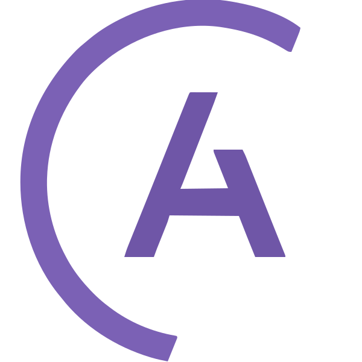
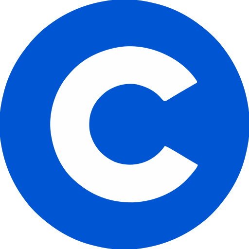
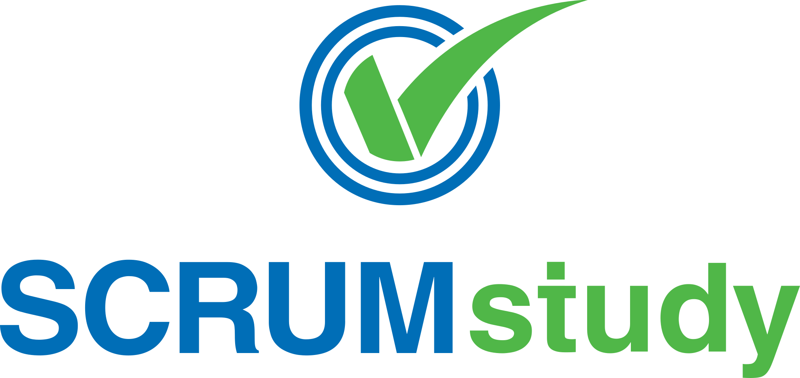

Career
Summary
Data Engineer, three years in: I build enterprise data pipelines and I run them. Industrial sensor data taught me what a pipeline has to survive; a luxury retail platform is where it runs now. Error handling, alerting, recovery plans and written architecture documentation are part of the deliverable, not follow-up.
Experience
-
Data Engineer · JACQUEMUS
Paris, France · août 2024 - Present (2 ans)
JACQUEMUS is a French luxury fashion house selling ready-to-wear, leather goods, and accessories through its own e-commerce, its boutiques, and wholesale partners, on order flows that peak at around 5,000 orders per hour at sale events and a data platform ingesting roughly 800,000 events and records a day across hundreds of gigabytes. I work in the Data Platform team, handling the internal order, customer, product, and pricing data through ETL and data modeling, integrating the external systems around it (exchange rates, transactional emailing, shipping, and refunds), and landing all of it in a medallion lakehouse architecture.
Data Engineering
- Built and maintained 20+ of a 150+ pipeline estate across Salesforce, ORLI/WMS, PostgreSQL, APIs, file shares, Azure Data Lake, and Azure SQL. Impact: The analytics, logistics, e-commerce reporting, and inventory-management teams work from these flows, so a stalled pipeline delays morning commercial reporting and inventory synchronization.
- Ran the retail order path on refresh schedules from 10 minutes to daily and weekly, with ingestion payloads reaching 150 MB per run.
- Integrated live Quarkus web services alongside the scheduled jobs, so data that cannot wait for a refresh window moves over an API rather than a batch table.
Cloud & FinOps
- Reduced Azure infrastructure spend by €1,400 per month by automating development-environment shutdowns, matching compute size to each environment, and redesigning shared Spark pools. Impact: A recurring monthly saving on the platform budget, taken with no SLA impact on the morning reporting pipelines.
Monitoring & Observability
- Instrumented ingestion workloads with Datadog APM and custom monitoring dashboards across Azure Data Factory, Fabric, and Spark pools. Impact: Alert coverage across the 150+ job estate, so a silent job or API failure surfaces before the business-hours reporting window rather than through a user report.
-
Data Engineer · OLIVESOFT
Sfax, Tunisia · févr. 2024 - juil. 2024 (6 mois)
OLIVESOFT is a data and Salesforce consultancy headquartered in Paris, delivering data engineering, integration, and BI services to more than 20 clients, mostly in luxury retail, including the day-to-day run and monitoring of the platforms it builds. I worked on the Kenzo Paris / LVMH account, building the production customer-feedback data flow between the service desk and the feedback platform.
- Built an asynchronous MuleSoft API-led integration connecting Salesforce Service Cloud to Diduenjoy from scratch for the Kenzo Paris / LVMH account. Impact: Decoupled service-desk agent workflows from downstream API latency, eliminating agent stalls when the external feedback platform was slow or offline.
- Implemented RAML REST contracts, automated retry policies, and dead-letter queues (DLQ) to handle transient endpoint failures. Impact: Guaranteed zero feedback data loss during downstream outages and established reliable customer-satisfaction tracking for the account.
-
Machine Learning Engineer · REGIM Lab
Sfax, Tunisia · juin 2023 - août 2023 (3 mois)
REGIM Lab (REsearch Groups in Intelligent Machines) is the applied-research laboratory of the National Engineering School of Sfax. I worked on a research prototype and case study on secure, transparent energy management using the public Ausgrid smart-meter dataset; it was not a production deployment.
- Ingested 30-minute interval telemetry across the 300-household Ausgrid smart-meter dataset into a monitoring web application and admin review dashboard.
- Developed a regression-based anomaly-detection pipeline to investigate noisy smart-meter readings, and stored cryptographic reading hashes through Ethereum smart contracts to create a tamper-evident audit trail.
-
Sfax, Tunisia · juin 2022 - mai 2023 (1 an)
OEM ENGINEERING is a Canadian industrial engineering company headquartered in Sherbrooke, Quebec, with its engineering site in Sfax, Tunisia, building high-speed material-sorting systems that identify metal alloys inline from visible near-infrared (VNIR) camera signals. I worked on the signal-processing and classification stack behind the sorting decision, across two roles.
Machine Learning & Statistical Engineer
sept. 2022 - mai 2023 (9 mois)
Real-Time Classification
- Integrated the deployed C++ Savitzky-Golay filtering path into inline metal-alloy classification, sustaining approximately 2,000 frames per second for real-time sorting decisions. Impact: Alloy identification runs at full conveyor speed, which is the constraint the sorting system has to meet to work inline at all.
Model R&D
- Built an offline XGBoost validation model that reached 94.7% accuracy on spectral datasets; kept it separate from production because its slower execution did not meet the real-time system constraint.
Signal Processing Engineer
juin 2022 - août 2022 (3 mois)
- Delivered a 100× signal-preprocessing speedup by replacing a C# Savitzky-Golay implementation with optimized C++ filtering using fixed in-memory parameters and GCC optimization, while retaining the same filter behavior for inline sorting. Impact: Preprocessing stopped being the bottleneck, and this is the path that went inline the following autumn, where the filter has to keep pace with the camera rather than catch up behind it.
Education
-
Computer Science Engineer’s Degree · National Engineering School of Sfax
Sfax, Tunisia · 2021-2024 (3 years)
Computer science engineering program specializing in Data Engineering, Distributed Systems, Cloud Architectures, and Applied AI.
Graduation Thesis
- Subject: fault-tolerant integration between a Salesforce service desk and an external customer-feedback platform, studied over a six-month final-year placement at OLIVESOFT.
- The argument: queued, asynchronous exchange keeps the service desk working when the downstream platform is slow or unavailable. The report set out the architecture, the failure cases it covers, and the trade-offs it accepts.
- Outcome: a written thesis and a running production integration, defended for the degree in 2024.
Data & Systems Specialization
- Data engineering & cloud: big data processing, database management systems (SGBD), business intelligence, parallel & distributed computing, and cloud architectures.
- Applied AI: machine learning and computer vision.
- Software craft & systems: DevOps, microservices, industrial blockchain, and clean coding.
Student Clubs & Training
- Training Lead, Securinets ENIS: ran the club's technical training track, 6 sessions a year (3 per semester), from x86 assembly through hands-on reverse-engineering labs to web exploitation and SQL injection, open to club members and to any ENIS student who turned up.
- Finding the people to teach it: brought in senior students and working engineers for the topics the club could not cover itself, and built the term's schedule around who was available.
- Member, IEEE Student Branch ENIS: part of the group running the introductory programming series (CS fundamentals, Python, C++ for competitive programming) .
-
Bachelor of Engineering (Mathematics and Physics) · Higher Institute of Applied Sciences and Technology of Mahdia
Mahdia, Tunisia · 2019-2021 (2 years)
The Tunisian national engineering preparatory program, MP track: intensive mathematics and physics, with admission to the National Engineering School of Sfax (ENIS) decided by competitive national ranking.
- Advanced mathematics: real and complex analysis, linear algebra, matrix theory, differential equations, numerical methods, and probability theory.
- Physics & computational foundations: classical mechanics, electromagnetism, thermodynamics, wave physics, and algorithmic problem solving.
Certifications
Vendor-certified across the data engineering stack: cloud data platforms, data orchestration, data integration, and observability.
-
Microsoft
-

Astronomer -
MuleSoft
-
Talend
-
Datadog
Online Courses
Continuous learning to master computing fundamentals and emerging technologies, understanding how new tools interface into modern data architectures.
-
 Anthropic
Anthropic
-
 OpenCV
OpenCV
-

Coursera -
Udemy
-
DataCamp
-

Scrumstudy
Volunteering
Crisis response, before any of the rest of this.
-
Jeunes Ingénieurs de Djerba (JID)
Djerba, Tunisia · Orientini · juil. 2023 (1 mois)
- Accompagnement de lycéens dans le choix d'une filière d'ingénierie et des carrières auxquelles elle mène.
-
Jeunes Ingénieurs de Djerba (JID)
Djerba, Tunisia · Orientini · juil. 2022 (1 mois)
- Accompagnement de lycéens dans le choix d'une filière d'ingénierie et des carrières auxquelles elle mène.
-
Croissant-Rouge tunisien · Comité local de Houmt Souk, Djerba
Djerba, Tunisia · Riposte COVID-19 · mars 2020 - juin 2021 (1 an 4 mois)
- Participation à l'organisation de la distribution de l'aide et à la coordination des files d'attente.
- Collecte et distribution de produits de première nécessité, et accompagnement des personnes âgées.